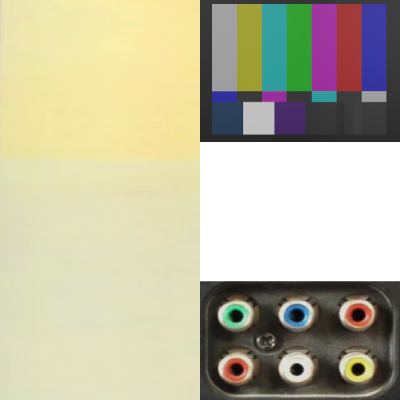
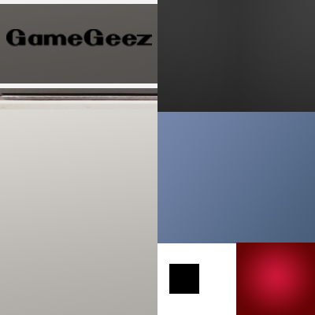
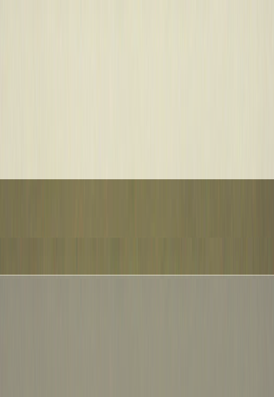

1.0: all products shown on the storefront are subject to stock, and may not always be available
1.1: all shipping must be handled by the buyer, as RetroWare.Store has no obligation to transport products
2.0: all warrantees are final, but any user purposefully breaking a product will void any warantee
2.1: additionally, a warrantee may be decreased in return if the product cannot be returned in un-restorable quality
2.3: all warrantees last 1-2 years and cannot be cancelled
3.0: by purchasing any product you hereby relinquish your soul to the Der...
--! Continuing...
3.1: to follow the path is to accept 3.0.
4.0: any donations made will have full documentation of where funds go To read more on donation rules, click here.
5.0: these terms apply to any and all products sold
5.1: any RetroWare products bought from seperate storefonts have warrantees void
This section of the devlog goes over the buttons seen around the pages.
Specifically, how they are stylized, and how the text is added to the page when some buttons are pressed.
If you see this text, that means that the buttons work, so thats a good sign!
buttons and links (the "a") are both given a brighter green colour, along with an underline.
The border, background and align are changed to assure it fits well with the rest of the text.
For the buttons to work, a Javascript script loads a secondary html document.
A button can then call the "addText()" function along with an id to pick from the hmtl document,
duplicates this element, and pastes it into the webpage document.
Since this document is in html, you can view this file here!
--! Opened Three.js Devlog
This section of the devlog goes over the 3D rendering using Three.
To start up the scene, each of the following items are loaded:
Each glb model including the model, materials and actions/animations
Lights - specifics depend on the model
Camera and orbit controls
After everything is loaded, the button on-click signals are connected to the animations.
For the camera itself, I've decided that positioning it to the top-right corner of the model to mimic the orthogonal style of the icons is best.
This makes it look mode 3D and hints the user towards using the mouse to control the camera too.
For the animation, the function first calls the "request animation frame" function that will queue itself up to run on the next frame.
In this function, the animation mixer is updated to run any animations playing, and the background colour is updated to change from the black to green gradient.
In the resize function, it gets the size of the canvas its rendering to, and then updates the renderer and camera.
To play the animation, the amount of loaded actions is checked first to make sure they are all loaded.
When playing the animation, its first reset, set to loop the correct amount of times, and then played.
To show the wireframe, the scene is searched through, and when a mesh is found, its material's wireframe mode is toggles on/off
--! Opened Theming Devlog
The overall theme of this website is meant to resemble a very old (Retro, if you will) tech store that hopped on this new thing
called the "internet". It was developed single-handedly by a very tech-savvy person, hence the command line aesthetic.
Since opening however, the store had become a bit, underused. The previously large array of products has now been reduced to three old
tech fossils.
The three models made use custom textures that map different tones so that different parts of the model.



The texture for the CRT-TV for example (far left) as two tones of yellow/baige for the main plastic body, and another for the screen when active.
At the bottom right of the image, the texture for the plugs was meant to be use as such, but ended up being used for the knobs at the front.
For the Game-Geez, I modelled the cable using a bezier curve, giving it the correct width, and then converted it to a mesh to allow it to export correctly.
For the Keyboard, each key was generated using an Array modifier in blender and then modified to the correct size.
The final models (screenshotted and then given transparent backgrounds below) were all made in blender, given some animations and exported to .glb formatting.
The CRT-TV has two animations:
Turning on the animation where a mesh with the active screen is moved in-front of the black screen
A simple animation where the two right dials are turned
The Game-Geez^tm is a hand-held console inspired by the nintendo game boy (shocker). It has three animations:
Pressing the two red buttons on the right
Pressing the D-pad in each direction
Turning on the screen of the console to reveal the logo using the same system as the CRT-TV
The Keyboard is a basic keyboard that has six animations, but each of them are a different key being pressed. Ideally, each button could be animated to be pressed,
however that means each key would have to be an individual model, and have an animation.
Below are three images of the wireframes of each model, including the UV unwraps of each model.
THE SOUL SHALL FOLLOW THE CUBE. REVEAL THE SECRET AND UNLOCK THE KEY